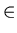
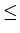
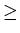
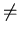
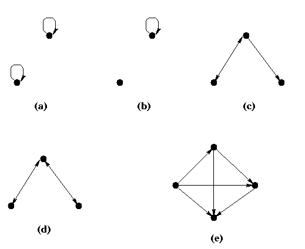

Relation
Properties of Binary Relation
Subjects to be Learned
- reflexive relation
- irreflexive relation
- symmetric relation
- antisymmetric relation
- transitive relation
Contents
Certain important types of binary relation can be characterized by properties they have.
Here we are going to learn some of those properties binary relations may have.
The relations we are interested in here are binary relations on a set.
Definition(reflexive relation):
A relation R on a set A is called reflexive
if and only if < a, a >
 R
for every element a of A.
Example 1: The relation

on the set of integers {1, 2, 3} is
{<1, 1>, <1, 2>, <1, 3>, <2, 2>,
<2, 3>, <3, 3>} and it is reflexive because
<1, 1>, <2, 2>, <3, 3> are in this relation.
As a matter of fact
on any set
of numbers is also reflexive. Similarly
 and =
on any set of numbers are reflexive.
However, < (or >) on any set of numbers is not reflexive.
Example 2: The relation
 on the set of subsets of {1, 2} is
{ < ,
> ,
< , {1} > ,
< , {2} >
,
< , {1, 2} >
,
< {1} , {1} > , < {1} , {1, 2} > ,
< {2} , {2} > , < {2} , {1, 2} > ,
< {1, 2} , {1, 2} > }
on the set of subsets of {1, 2} is
{ < ,
> ,
< , {1} > ,
< , {2} >
,
< , {1, 2} >
,
< {1} , {1} > , < {1} , {1, 2} > ,
< {2} , {2} > , < {2} , {1, 2} > ,
< {1, 2} , {1, 2} > }
and it is reflexive. In fact relation
on any collection of sets is reflexive.
Definition(irreflexive relation):
A relation R on a set A is called
irreflexive if and only if <a, a>
R
for every element a of A.
Example 3: The relation > (or <) on the set of integers {1, 2, 3} is
irreflexive. In fact it is irreflexive for any set of numbers.
Example 4: The relation {< 1, 1 >, < 1, 2 >, < 1, 3 >,
< 2, 3>, < 3, 3 > }
on the set of integers {1, 2, 3} is neither reflexive nor irreflexive.
Definition(symmetric relation):
A relation R on a set A is called symmetric
if and only if for any a, and b in A,
whenever <a, b>
R ,
<b, a>
R .
Example 5: The relation = on the set of integers {1, 2, 3} is
{<1, 1> , <2, 2> <3, 3> }
and it is symmetric. Similarly = on any set of numbers is symmetric.
However, < (or >),
(or
on any set of numbers is not symmetric.
Example 6: The relation "being acquainted with" on a set of people is symmetric.
Definition(antisymmetric relation):
A relation R on a set A is called
antisymmetric
if and only if for any a, and b in A,
whenever <a, b>
R ,
and
<b, a>
R , a = b must hold.
Equivalently, R is antisymmetric if and only if whenever
<a, b>
R , and a

b ,
<b, a>
R .
Thus in an antisymmetric relation no pair of elements are related to each other.
Example 7:
The relation < (or >) on any set of numbers is antisymmetric.
So is the equality relation
on any set of numbers.
Definition(transitive relation):
A relation R on a set A is called
transitive
if and only if for any a, b, and c
in A,
whenever <a, b>
R ,
and
<b, c>
R ,
<a, c>
R .
Example 8: The relation
on the set of integers {1, 2, 3} is
transitive, because for <1, 2> and
<2, 3>
in ,
<1, 3>
is also in
,
for <1, 1> and
<1, 2>
in ,
<1, 2>
is also in
,
and similarly for the others.
As a matter of fact
on any set
of numbers is also transitive. Similarly
and = on any set of numbers are transitive.
The following figures show the digraph of relations with different properties.
(a) is reflexive, antisymmetric, symmetric and transitive, but not irreflexive.
(b) is neither reflexive nor irreflexive, and it is antisymmetric, symmetric
and transitive.
(c) is irreflexive but has none of the other four properties.
(d) is irreflexive, and symmetric, but none of the other three.
(e) is irreflexive, antisymmetric and transitive but neither reflexive nor symmetric.

Test Your Understanding of Properties of Binary Relation
Indicate which of the following statements are correct and which are not.
Click True or False , then Submit. There are two sets of questions.
Next -- Operations on Binary Relations
Back to Schedule
Back to Table of Contents